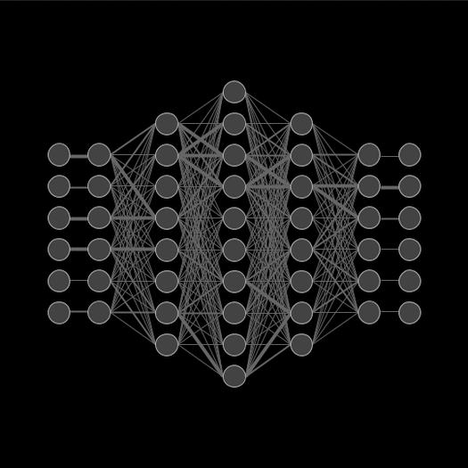
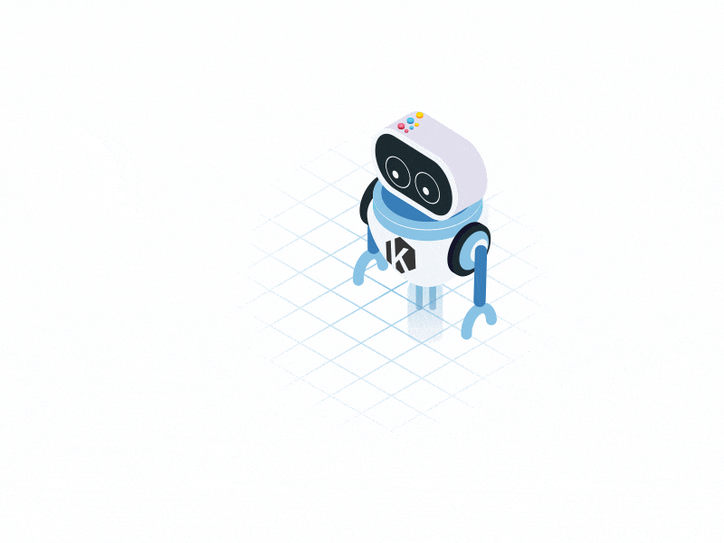
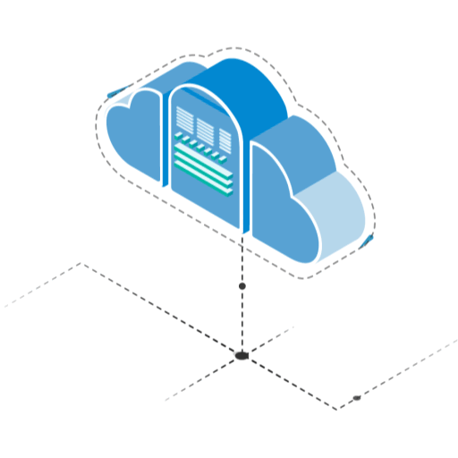
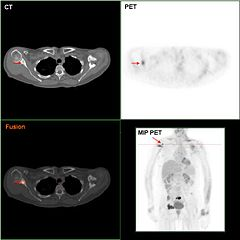
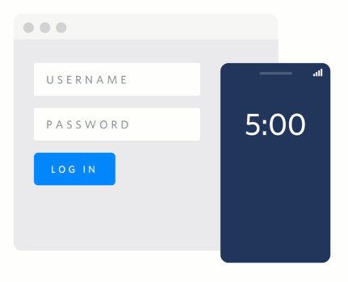

About Me
AI Product & ML Systems Engineer building scalable, production-grade LLM platforms.
I specialize in converting ambiguous business problems into high-ROI AI systems—optimizing for cost efficiency, latency, reliability, and long-term architectural durability. My work sits at the intersection of LLM infrastructure, applied machine learning, and product strategy.
Recently, I led the transition from API-dependent LLM usage to a self-hosted inference architecture—preventing projected six-figure annual costs while improving latency by 70% and achieving 8× throughput gains. I designed multi-layer caching systems (95% hit rate), fault-isolated inference pipelines, and secure deployment boundaries.
Beyond infrastructure, I’ve driven measurable product outcomes:
- • 40% reduction in workflow time
- • 35% ARR growth via AI-enabled features
- • 42% increase in application conversion through ranking optimization
- • 30%+ operational efficiency improvements in manufacturing use cases
I’m particularly interested in:
- • Scalable LLM orchestration
- • Retrieval-augmented systems (RAG)
- • Cost-aware AI infrastructure
- • Reliability engineering for AI products
- • Designing systems that balance experimentation velocity with production stability
Philosophy
“ I value strong architectural decisions, clean trade-offs, and eliminating complexity that doesn’t translate into business impact.
Skills & Technologies
Programming
ML/AI Frameworks
NLP & Conversational AI
MLOps & Cloud
Databases
Tools
Featured Projects

Fortified network resilience, achieving a 30% reduction in adversarial vulnerability and error rates across complex visual datasets. Identified that Token Masking outperforms traditional Image Masking in ViT-based encoders, while adding FD loss or HRDA leads to a decrease in mIoU, suggesting these components may be redundant in the final VFM-UDA method.
Reduced recruitment time by 40% using advanced analytics, with Milvus DB for fast similarity searches and AWS cloud for scalable infrastructure. Increased assessment accuracy by 30% by integrating machine learning algorithms and leveraging Llama for prompt engineering, and employing computer vision techniques for Resume parsing.



The objective of the project is to Predict whether the tumor is cancerous (Malignant) type or non-cancerous (Benign).
Plotted Model performance graph of different ML algorithms and, Concluded prediction accuracy of 99% with Logistic Regression classifier.

Created A web automation project that bypasses the Government of India Goods and Services Tax website using login credential information and auto-fills captcha text by recognizing the speech of the captcha and decoding it into text. *learning purpose only
Articles & Writing
Understanding Transformer Architecture in Modern NLP
A deep dive into the transformer architecture and its impact on natural language processing tasks.
March 2024
Production ML Systems: Best Practices
Key considerations and best practices for deploying machine learning models in production environments.
February 2024
LSTM vs Transformers for Time Series Forecasting
Comparing traditional LSTM approaches with modern transformer-based methods for time series prediction.
January 2024
What my Topmate's Mentees have to say?
Testimonials
"You did a wonderful guidance session ...thank you Shivansh for sharing ur valuable thoughts with me and helping me to take a better decision for my future self."
- Shweta
"I was searching for words that could describe my happiness about your service and how confident I became when I knew exactly what I should do in the next 5-10 years of my life..."
- Sanchit
"Shivansh has a remarkable capacity to listen intently and deliver insightful feedback that is both constructive and uplifting. I am so appreciative of his mentorship and guidance."
- Harshita Sinha
Get In Touch
I'm always open to discussing new projects and opportunities
Contact Number
+91 79 8576 3648